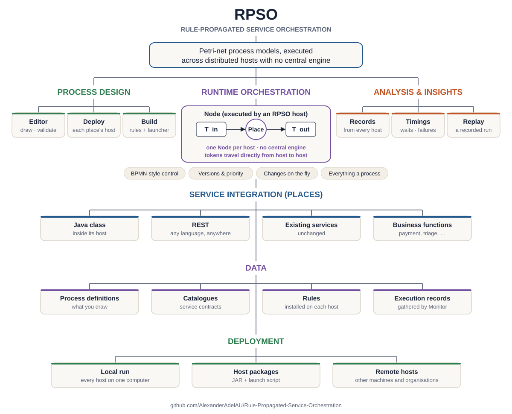
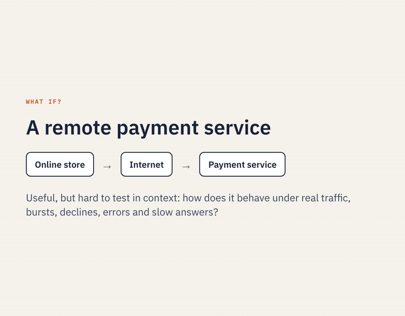

RPSO · Research and design platform
Rule-Propagated Service Orchestration
RPSO uses Petri net concepts to orchestrate ordinary callable services as a formally defined, distributed system. The services keep their code unchanged. It is an orchestration infrastructure: you draw a process, and generic hosts carry it out across machines and organisations with no central engine, calling your existing services (a REST endpoint or a method of a Java class) where they already run.

What it does
- Binds services you already haveA Java class or any REST endpoint becomes a Place in a Petri-net model. The Place reaches it through an adapter, which turns the arriving token into the call and the answer back into a result and a route. An existing API is called as it is, through a call mapping the editor can fill in from the API's published definition.
- Runs with no central engineEach host follows rules installed from the model, and tokens travel directly from host to host.
- BPMN-style controlGateways route on a service's own answer; forks, joins, merges, and signals that start a compensation process.
- Several versions at onceVersions share the same hosts, each measured separately; where they share a service, the lower version is served first.
- Changes on the flyA new version can be published to running hosts. Tokens already moving finish under the version they started with.
- Across organisationsSteps can run on different machines, or in different organisations that each run their own hosts.
- Measured and replayedEvery run's records are gathered and analysed for queue waits, service times and failures, then replayed on the model.
The smallest proof: a process with one step
An online store relies on a remote Payment Service. Its existing REST endpoint is bound to a Place, and RPSO orchestrates every payment through it: it makes the call, routes on the service's own answer and records what happened, without changing any existing code. In this recorded run, a mock payment service on Vercel receives steady payments, then a burst of twelve.

Watch this run · An emergency department on six hosts · A stroke code across four organisations
Nothing changes as the process grows. Add Places for inventory and order handling and the same hosts run the whole checkout; put those Places on other machines, or in other organisations, and they run it as a distributed process, as the two larger runs above show.
Questions people ask
- Where is the engine?
- There isn't one. Deploying a process installs its rules on each host that runs one of its Nodes; each host decides locally and sends tokens straight to the next host.
- How does this relate to BPMN?
- RPSO borrows BPMN's control ideas (gateways, parallel forks and joins, merges, end events, signals) and expresses them as Petri nets, which gives each an exact meaning a recorded run can be checked against.
- Is it ready for production?
- No. RPSO is for research and design: modelling a process, running it across real machines and services, and measuring what happens, before and beside the engine that will run it in production.